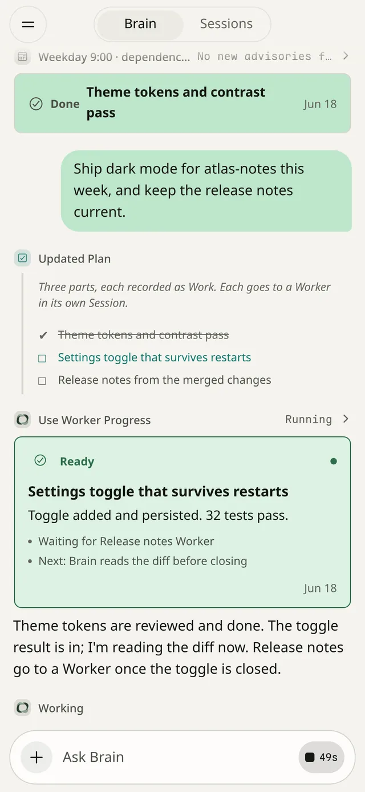
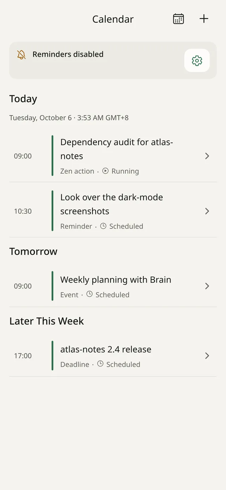
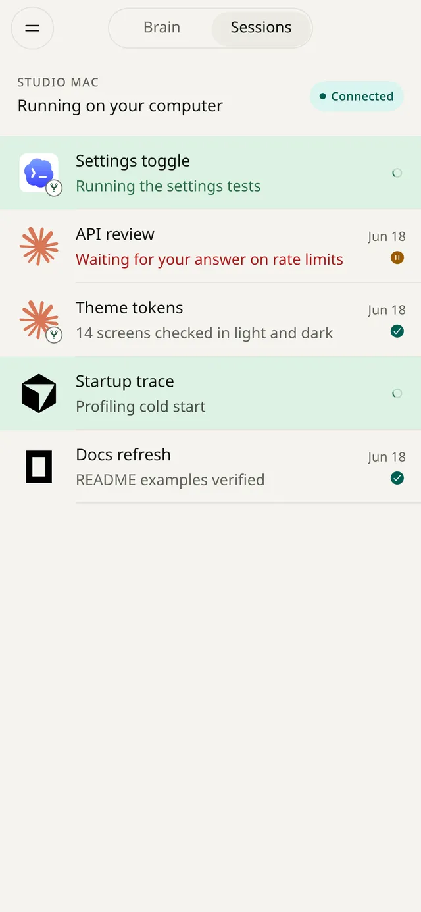
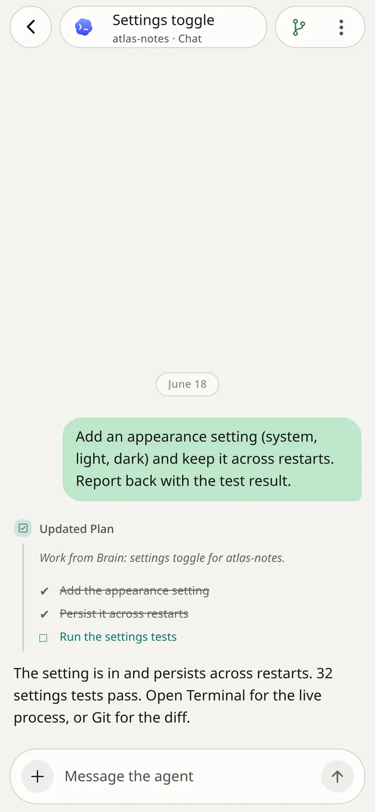
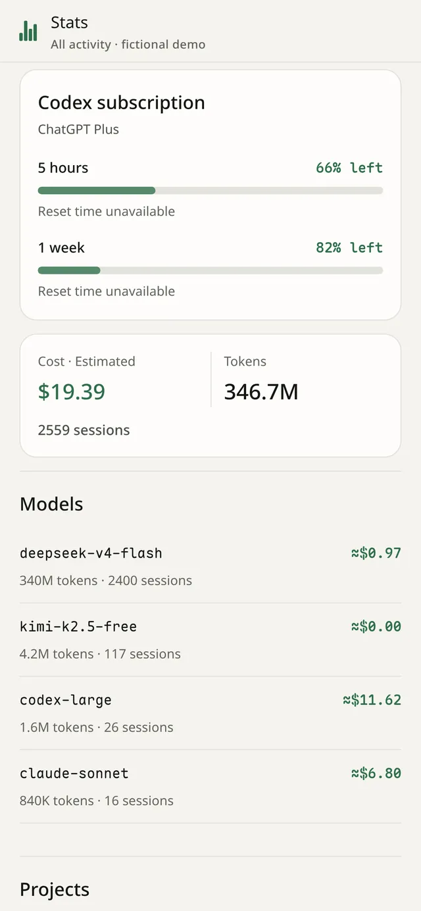

Open source · runs on your own computer · Android and iOS beta
Give Brain the goal.
Your coding agents do the work.
Zen is a phone app for developers who run Claude Code, Codex and other coding agents. Brain splits your goal into Work, hands each part to an agent on your machine, reviews what comes back, and calls you only when it needs you.
- Apache-2.0
- Daemon on Linux, WSL2 or Apple Silicon Mac
- Android APK · iOS preview

Brain
One goal in. Reviewed work out.
Brain is an agent of its own, running on your computer. It holds the goal and keeps going. You don’t have to relay messages between agents or check on each one.
-
You say what you want, once.
Type a goal to Brain on the phone, or send it from Telegram. Then put the phone away.
-
Each part becomes durable Work.
Brain records every part as Work with its attempts, wake timers and review state. Work survives restarts. Brain doesn’t poll: Workers report back, and timers wake it when something is due.
-
You set the routing in plain Markdown.
Before each spawn, Brain reads
routing.mdto choose the executor, model and reasoning level for each part. Tell Brain a preference and it rewrites the line.# routing.md (example) - UI and copy: claude, high reasoning - Go daemon and tests: codex - Quick lookups: pi -
Workers are ordinary Sessions.
Every Worker is a normal agent Session on your computer. Open any of them to read along, answer a question or take over.
-
Nothing is done until it’s reviewed.
Brain reads each result and decides the next step. Only Brain or you can mark Work done. A Worker that goes missing shows up as Needs review, not as a success.
Brain, beyond one goal
It remembers, keeps a schedule, and reaches your other tools.
-
Memory you can read
Brain keeps
current.md,profile.md,memory.mdand a worklog as plain files in its workspace. Open and edit them like any other file. -
Switch the host, keep the thread
zen brain use codexmoves Brain itself to another agent client and keeps its thread. -
Calendar Beta
Events, reminders and deadlines. A scheduled action runs as visible Work and posts its result back to the Brain thread.
-
Telegram Beta
A second channel to the same Brain, for when the app isn’t open.
-
Plugins Preview
Linear, Notion, GitHub, Slack, Google Workspace, or your own MCP and OpenAPI servers. Plugins can read by default; letting them make changes is a separate switch.
-
Resources
CPU, memory, disk and pressure, with each process attributed to a Worker, Brain, Docker or you. Brain is told when the machine runs short.

Sessions
Every agent is a real session you can step into.
Start any of these in any folder on your computer, from the phone:
- Claude
- Codex
- Cursor
- Grok
- Pi
- OpenCode
- DSH
- Shell
Each one runs in tmux, so it’s also there at your desk. On the phone you choose how to look at it:
- Chat
- Messages, tool calls, plans and attachments, laid out for reading.
- Terminal
- The live terminal, rendered natively with libghostty.
- Git
- Read-only diffs of the repository: all, working or staged.
Your phone gets a push only when a Session needs input, fails or finishes.


Around the agents
Keys, skills, costs and ports, on the same server.
-
Model Providers
Use the official login for Codex and Claude, or your own OpenAI, Anthropic, DeepSeek, OpenRouter or custom gateway keys. Keys are stored on the daemon and never shown again.
-
Skills
See the Skills and Agent Plugins your agents load and where each copy came from. Remove an exact copy without touching the rest.
-
Stats
Tokens, Sessions and cost per model and project. Reported, estimated and unknown costs are kept apart.
-
Services
Ports your Sessions opened, grouped by project. Open one through a temporary Cloudflare Quick Tunnel if you need to.

Install
Three steps from your terminal to your pocket.
-
Install the daemon
curl -fsSL https://raw.githubusercontent.com/user/zen/main/install.sh | shChecksum-verified, no sudo, no telemetry. Then run
zen doctorto check the host. -
Start it on your network
zen --lanOn a trusted private network. Away from home, use Tailscale:
zen -addr "$(tailscale ip -4):9876". -
Scan the code
Open the app and scan the QR code
zenprints. Pair once, then open Brain.Android APK · iOS TestFlight preview (awaiting review) · iOS from source
Needs Linux (amd64 or arm64), WSL2 or an Apple Silicon Mac, with tmux and at least one signed-in agent CLI. Connect and pair
Yours
One owner, on your own machine.
Zen serves one person. The daemon has an Ed25519 identity. A phone enrolls once with a short-lived pairing code, then signs every request. Repositories, credentials and agent state stay on your computer. Paired phones see what you open; model providers see what your agents send them.